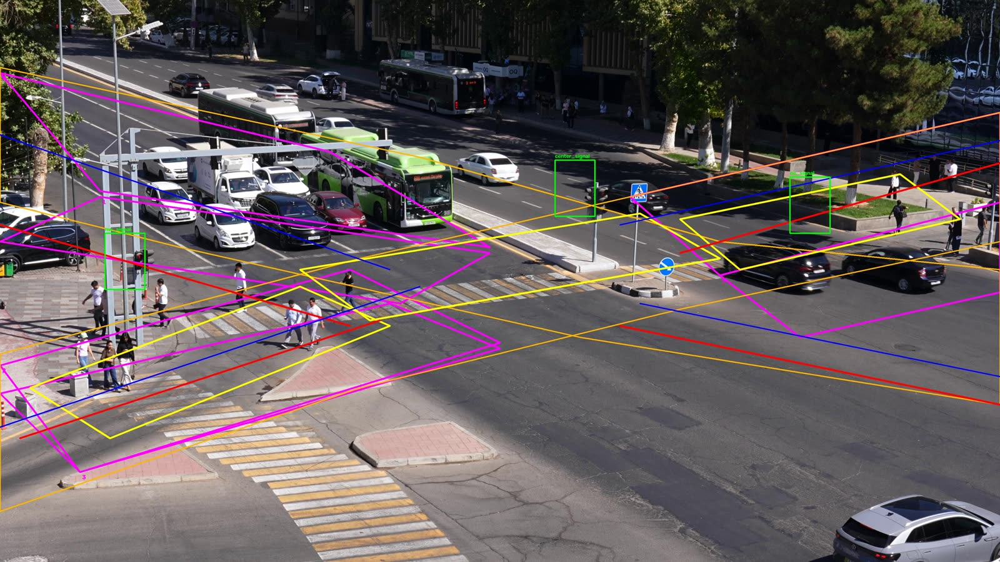

Team 798C27C9 WIUT / Toyota Tesseract hackathon Part A + Part B
Traffic events and accident risk from one fixed road camera.
A single elevated 4K CCTV feed, no fisheye, no LiDAR, no second camera. From it we output 14 event classes as time segments and a causal per-frame accident-risk curve — and the same code runs live on a video you upload, right here, on CPU.
Loading measured numbers…
The scene
One fixed, elevated, wide-angle camera over a large signalised intersection in Tashkent, Uzbekistan. Two roads cross diagonally, there are three marked crosswalks, and bus traffic is heavy. The camera never moves — which is the whole point, and also the whole difficulty.

configs/scenes/data_video1.json drawn on top:
two diagonal corridors (magenta / red / blue), four stop lines (yellow), the
centre markings (blue), three crosswalk polygons and three traffic-light ROIs.
That geometry is what turns raw trajectories into the line- and signal-based
event classes. TODO(team): replace with a frame from the two sample clips
once a per-camera scene file exists.
Why a fixed camera
Calibration is a one-off. No ego-motion, no rolling shutter to fight, no depth network. Geometry can be measured once and hard-coded, and then every rule is a cheap inequality on a trajectory measured in metres.
Why it is hard
Everything is 50–150 m away in a 4K frame squeezed into a 640 px detector input. Buses occlude cars, pedestrians merge into crowds, and a single wrong box corrupts a whole track for the rest of the clip. In the two sample clips the detector reports a mean of — and — road users per sampled frame.
Why it matters
All 14 official classes are things you can only judge from a track over time, not from a single frame. A stopped car only becomes stopped_vehicle after 10 s; a swerve only becomes near_miss because of the braking that preceded it.
Problem & approach
The organizers hand you two functions. detect_events(path) returns
[start_sec, end_sec, label] segments. RiskEstimator.step(frame, t)
returns a number per frame. Everything between them is yours.
Learned perception
YOLO11n (ONNX, 10.7 MB, 640 px, conf 0.25) — a stock COCO checkpoint, exported to ONNX so the offline evaluation host needs no PyTorch. It is the only learned component in Part A. It sees 8 of the 80 COCO classes and we keep the road-user ones.
Everything downstream of the box is arithmetic. There is no learned event classifier, and we say so plainly rather than dressing up a threshold as a model.
Rule-based events
14 hand-written rules over the same RiskFeatures-style state: time-to-collision, closing speed, deceleration, lane direction vs. velocity, stop-line crossing, crosswalk occupancy, and duration timers. Thresholds live in configs/default.json and are overridable by environment variable.
Why rules for 12 of 14: a red-light violation is a geometric fact, not a statistical one. Training a network to relearn "crossed the line while the light was red" from a handful of labels would burn the whole budget and generalise worse.
Part B risk
A heuristic scorer: TTC ramp, proximity, closing speed, braking, pedestrian conflict, plus the current accident/near_miss/wrong_way rule candidates, EMA-smoothed. It is causal by construction — step() only ever reads feature samples whose timestamp is ≤ the current frame, and never opens the video.
It is explicitly not a trained future-label classifier. See the report for what that costs us.
Part B boundary
Part B does not reuse Part A's perception. RiskEstimator builds its
own causal runtime — detector, tracker and the same rules — and drives it from the frame handed to
step(). It is strictly causal by construction: it never opens the video and never
looks ahead.
It samples the detector at its own, coarser stride (risk.detector_stride) and
repeats the previous score exactly on the frames in between, which the task
permits. That is also why Part B is not free — see the honest cost accounting in the
report.
The 14 classes and how each one is decided
| Class | Decision rule (all read from src/rules/engine.py) | Needs scene geometry? |
|---|
EDA of the sample clips
Every number in this section was produced by
website/tools/analyze_samples.py, which runs the repository's own
detector over the two sample clips and writes one JSON file. The page renders that
file and nothing else. If you want to re-derive it, the command is in
website/README.md.
Measured output on the sample clips
This section is generated by website/tools/run_samples.py, which calls
the competition entry points solution.detect_events() and
solution.RiskEstimator exactly the way run_submission.py
does. It reads static/data/results.json; if that file is absent the
section says so instead of inventing anything.
Live demo — drop your own clip
The same solution.py the graders run, served over HTTP. Drop an
.mp4 (or .webm/.mov) on the box and the
backend runs Part A + Part B on CPU and returns the event segments, the risk
curve and annotated frames.
1 — Pick a file
A 30–60 s clip is plenty. Part A runs at about 1.5× real time on a CPU, so a 60 s clip takes roughly 90 s. Long clips are rejected, never silently truncated.
2 — Output
What the backend does, and what happens when it cannot
Job model
POST /api/jobs with the raw file body returns a job id immediately;
the browser polls GET /api/jobs/<id> for stage and
percentage. You get progress on a 2-minute clip instead of a spinner, and a
5-minute clip does not look like a hang. One inference at a time — the queue
is a lock, so the box stays responsive.
Graceful degradation
If weights/yolo11n.onnx is missing the pipeline is not
allowed to 500. The job still reports the real video metadata and returns an
empty event list with degraded: true and a human-readable reason.
GET /api/health tells you which detector will run before you
upload anything.
Byte-range video
The static handler implements HTTP Range, so the preview clips
seek instantly instead of downloading 10 MB first. Without it the
click-to-seek extra-credit feature is unusable on a phone.
The static site and the demo backend are the same process:
python website/demo/app.py serves this page and the API on
http://127.0.0.1:8000. Deployed on a static host the page still works
fully; only the upload box is disabled, and it says so.
Report
What we built, what works, what does not, and what is next. The failures are the useful part.
Team
Three people. Competition team id 798C27C9.
Division of work
| Area | Owner | Status |
|---|
Links & artefacts
Everything a judge might want to open.